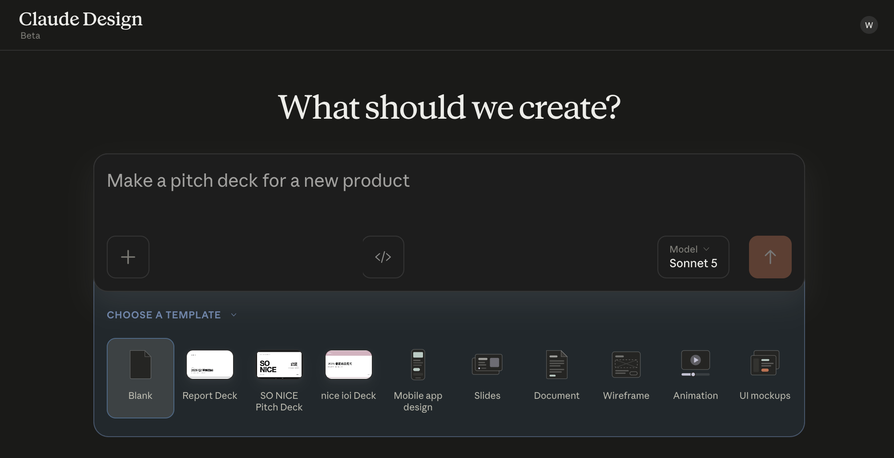
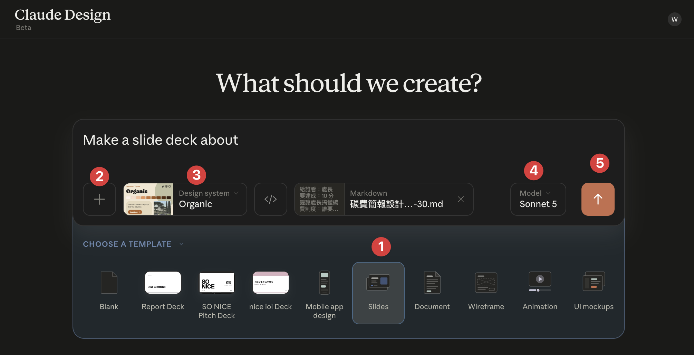
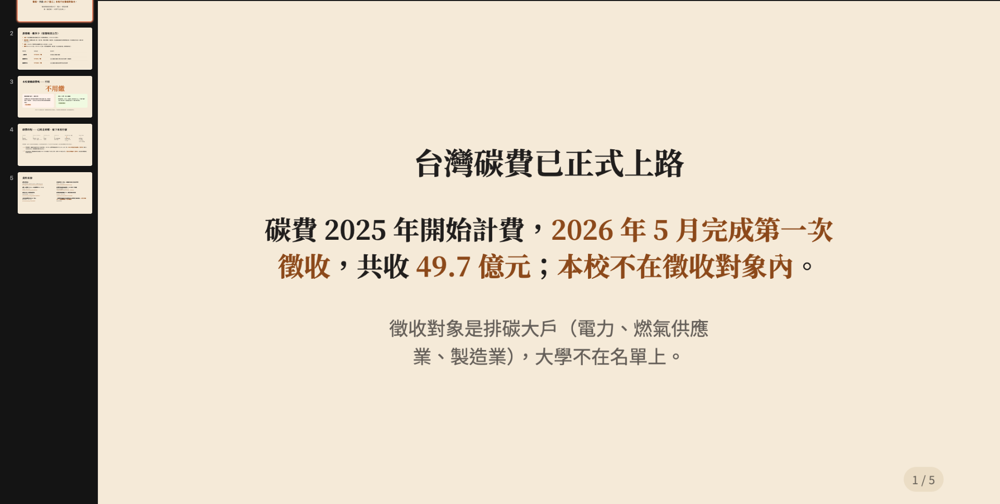

東海大學. ／ 永續處
DAY 2 / 2永續處 ＋ 產學夥伴
換它 ——
學會你的做法。
學會你的做法。
AI 工作流工作坊 ｜ Day 2 / 2 —— 一個會自審的 skill · 一塊親手改造的板子 · 要判斷的，留給你。
講師 余文皓
匯流顧問有限公司
2026 / 08 / 31
東海大學永續處 · AI 工作流工作坊 · D2
BLOCK 0開場
兩週了 ——
它長大了嗎？
它長大了嗎？
上次下課前說好：那三件事做了，它才會長大。
開場 · 15 MIN
2 / 101
兩週前的最後一頁驗收
那三件事 —— 做到哪了？
D1 建的是骨架。這兩週，它就靠這三件長大。
01
把你要去哪，講完整
願景、這一季的目標、每週要完成的事 —— 跟它講完整了嗎？
為什麼
不然「開工」只是幫你列事情 —— 不會幫你對齊你自己的目標。
不然「開工」只是幫你列事情 —— 不會幫你對齊你自己的目標。
02
把工作搬進來
報告書、法規、會議資料 —— 拉進資料夾了嗎？一個案子一個資料夾。
為什麼
它讀得到，才幫得上。空的 vault，只會給你很通用的答案。
它讀得到，才幫得上。空的 vault，只會給你很通用的答案。
03
讓節奏跑起來
早上「開工」、下午「收工」、每週結算 —— 跑了幾輪？
為什麼
D1 建的東西，是靠這三個動作養大的。
D1 建的東西，是靠這三個動作養大的。
3 / 101
BLOCK 0 · 作業回收 · 兩週前的約定
你們寫的兩週 · 群裡的三則分享
這兩週 —— 你們自己玩出來的。
MAGGIE
請它確認信件，避免漏信
排程每週自動彙整——出版人權報告書的產業、投資人評比的重大性章節，存成知識卡；過程中跟它對話，釐清自己要什麼資料
串聯四散的人權法規｜自建 Google Script 問卷｜簡報母片＋網頁
「跟 Claude 配合的算是愉快。」
大哲
課堂教的信件整理、安排會議之外——每天整理國際 ESG 新聞，省蠻多時間
數十份 IMV 方法論文獻差異分析｜台積電近百頁中英文報告校稿——抓出不少誤植，挺精準
試了 Notion 做會議記錄——出人意料的好
「Claude 真的強。」
LAN
蒐集＋摘要翻譯英文論文，自動標記作者等資訊
為了引用不出錯——讓它一份一份分開處理；它留的決策點多，能中途修正，很貼心
還請它當日文教練，練學術交流的會話
「使用體驗非常好，遠超想像。」
4 / 101
BLOCK 0 · 分享
兩週前的預告今天兌現
那天最後放的三個箭頭 —— 今天兌現。
那天說的
今天
每做一次，就要再跟它講一遍步驟
→
Skill：教它一次，以後一句話整套重跑 —— 每人帶走 1–2 個
全班 —— 每日快報、公文、彙整，都是它
要交簡報，還是自己開 PPT 一頁一頁寫
→
Claude Design：資料和重點給它，整份簡報生出來 —— 還能變形
Mia 許願的那條 —— 投獎版／報告版
產學案進度，散在各自的檔案裡
→
一塊看得見的板子 —— 自己部署，自己動手改成你要的樣子
喬云 · 柏源 · 芊臻 · 大哲 —— 管考那條線
這三個箭頭，就是今天的課表 —— 現在開始，一個一個收。
5 / 101
BLOCK 0 · 三個箭頭
THE JOURNEY接下來四小時
三個箭頭 —— 攤開，是這七站。
01
Skill 是什麼 —— 你 vault 裡早就有一個，拆開給你看
02
全班一起建第一個 —— ESG 每日快報：產完自己審，每一則指得回來源
成品 ①
休息 20 分鐘
03
讓另一個它來審 —— 建你的第一個 agent
04
換你的題 —— 把班子複製一份，掛進「開工」
05
一份文稿，生一份簡報 —— 還能投獎版／報告版變形
成品 ②
06
喚醒板子 —— 部署上線，動手改成你產學案的樣子
成品 ③
07
收尾 —— 帶走什麼、之後怎麼繼續
三個成品下課帶走 —— skill、簡報、板子，每一個都是你自己動手做的。
6 / 101
BLOCK 0 · 今天的旅程
BLOCK 0 → 1BRIDGE
第一個箭頭 ——
Skill。
Skill。
其實這兩週，有一個 skill 一直在幫你做事 —— 先把它抓出來。
SKILL · 上半場
7 / 101
揭曉誰在背後做事
你以為是 Claude 自己做 —— 其實是一個 skill。
你以為
D1 那天你打 [研究] —— 它上網查、整理成報告、存進 Inbox。你以為是 Claude 自己會。
其實不是。
背後 · 一個 SKILL ＝ KNOWLEDGE-KEEPER
你打 [研究]／[歸檔] —— 是 knowledge-keeper 這個 skill 接手，照教好的步驟做完。
你不用記 skill 的名字 —— 說「[研究]⋯」它自己就跳出來上工。
[研究]、[歸檔]—— 都是 knowledge-keeper 這一個 skill 在背後跑。
8 / 101
BLOCK 1 · 揭曉
SKILL 是什麼教一次 · 多一個員工
Skill ＝ 把一整套做法，教給它一次。
CLAUDE 本身
通用助手 —— 什麼都會一點，但不知道你們單位怎麼做事。
像剛到職的工讀生 —— 能力不差，但規矩要一條條教、每次重講。
裝上 SKILL
把「你的流程、標準、偏好」教進去 —— 它就照你的方式做。
像待了三年的老手 —— 你說一句，他知道整套怎麼跑。
裝一個 skill＝ 多一個資深員工。knowledge-keeper 是你的研究員 —— 今天，你會自己再雇幾個。
9 / 101
BLOCK 1 · 教給 Claude
SKILL 結構就是一個資料夾
一個 skill —— 就是一個資料夾。
你的 vault / .claude/skills/
你的 vault/
└─ .claude/skills/
└─ 你的 skill/
├─ SKILL.md ← 主要指令（必要）
├─ scripts/ ← 腳本（選用）
├─ references/ ← 參考文件（選用）
└─ assets/ ← 模板（選用）
每個 skill 都這個長相：SKILL.md 必要，其他要用才加。D1 用的 knowledge-keeper 就是一個。
最少 —— 一個檔就是 SKILL
只有 SKILL.md 必要，其他都是選配。很多 skill 就這一個檔。
就是資料夾 —— 帶得走
整包複製就能分享 —— 丟進 .claude/skills/ 就生效。
📖 想更深入 —— skill 怎麼運作、怎麼寫得好：
yu-wenhao.com/zh-TW/blog/claude-skills-guide ↗
10 / 101
BLOCK 1 · 長什麼樣
SKILL.MD封面 ＋ 你的 SOP
打開 SKILL.md —— 上面封面、下面 SOP。
.claude/skills/knowledge-keeper/SKILL.md
---
name: knowledge-keeper
description: 知識庫助手。兩個暗號：
[研究] 收集網路資料、
[歸檔] 拆成知識卡片。
當使用者說「[研究] XXX」⋯時使用。
---
# 知識庫助手
## 工作流程 — [研究]
1. 先查你存過的 2. 再補外部
3. 讀多來源、整合 4. 進 Inbox
封面（--- 之間）
名字 ＋ 觸發語 —— 它靠這段判斷要不要啟動（就是 [研究]／[歸檔] 兩個暗號）。
本體（下面整段）
就是你的 SOP —— 規則，加一步步的流程。
你看得懂—— 就寫得出。
11 / 101
BLOCK 1 · 打開 SKILL.md
開機的時候它先做三件事
每次叫出 Claude —— 它先做三件事。
終端機打 claude，或點側欄那顆橘色小太陽 —— 叫出它
↓
01
讀 CLAUDE.md
你是誰 · 你的規矩 —— D1 那天寫的，它每次開機都讀。
↓
02
點一遍它的工具
它能動的手 —— 讀檔 · 寫檔 · 跑指令 · 上網查。
↓
03
掃一遍現成的 skill
只讀名字和一句話 —— 你用到哪個，它才翻開那一個。下一頁放大看。
↓
準備好了 —— 等你講第一句話
每次開機這三樣自己就位一次 —— 你一句話都不用交代。
第 ③ 樣現在裝的是別人寫好的 · 等一下，你會自己寫一個
12 / 101
BLOCK 1 · 開機
放大看name · description · SOP
開機只讀兩行 —— 其他的，叫醒才翻。
開機就讀 —— 一直在它腦裡
name
它的名字 —— 點名用。你不用背，它自己認。
description
剛剛第 ③ 件事「只讀名字和一句話」—— 就是這句。寫兩件事：它做什麼＋什麼時候叫它（觸發語住這裡）。
寫得含糊 —— 該醒的不醒、不該醒的亂醒。
叫醒才翻 —— 用到才進腦
SOP（本體）
被 description 叫醒之後，才翻開 —— 照你的步驟，一步步跑。
平常不佔它的腦容量 —— 裝十個 skill 也不擠。
description 決定它醒不醒—— SOP 決定它醒來做得對不對。
13 / 101
BLOCK 1 · 放大看
為什麼值得一次寫好 · 天天省
為什麼值得包成 skill？
對你
穩品質
報告書的口徑，今天這樣寫、明天那樣寫，就跑掉了 —— 寫成 skill ＝ 同一套流程、同一份格式。
省力
係數表更新、管考回報 —— 不用每次重講背景，一句話觸發，整套自己跑。
對它
腦袋不塞爆
前一頁看過的紅利 —— 平常只掛名字和一句話，用到才把 SOP 翻進腦裡。
塞越多、它越抓不住重點 —— 省下來的位子，注意力留給當下這件事。
一次寫好—— 穩品質、省力，還不佔它的腦。
14 / 101
BLOCK 1 · 為什麼值得
解構對照真 SKILL
你天天喊的「開工」—— 擺旁邊看，一模一樣。
✅ 已經是 SKILL —— 住在 .claude/skills/
knowledge-keeper/SKILL.md
---
name: knowledge-keeper
description: …說「[研究]」「[歸檔]」時使用
---
## 工作流程 — [研究]
1. 先查你存過的
2. 再補外部
3. 讀多來源、整合
4. 進 Inbox
⚠️ 還不是 SKILL —— 還住在 CLAUDE.md
CLAUDE.md — § 流程：Daily
### 開工
觸發語：「規劃今天」「今日規劃」
「開工」「plan my day」「早安」
流程（節錄）
1. 確認日期 ＋ 檢查 git
2. 回顧最近 daily、盤點待辦
3. 掃 Efforts／Inbox 可做的事
4. 討論後建立 Daily Note
兩邊都是觸發語 ＋ 步驟 —— 同一個形狀，差別只在住哪。
你天天在用、也看得懂 —— 所以你寫得出。而且搬家一段話就搬得動 —— 下一步，現場就搬。
15 / 101
BLOCK 1 · 解構開工
動手打開你的 CLAUDE.md
換你 —— 打開你自己的 CLAUDE.md。
1
檔案列表最上層 —— 點開 CLAUDE.md
D1 那天你寫過「你是誰」的那份 —— 它每次上工前讀的就是這份。
2
往下捲，找到 ## 流程：Daily 底下的 ### 開工
觸發語＋流程 —— 跟剛剛投影的一模一樣，真身就在你機器上。
3
再看看還住著誰
### 收工、## 流程：WAM —— 還有你這兩週自己加過的規矩。
邊翻邊勾 —— 三個都找到了嗎
☐ ### 開工 —— 每天早上跑的那段
☐ ### 收工 —— 每天收帳的那段
☐ ## 流程：WAM —— 每週結算的那段
每個人的手冊長得不完全一樣。
三段都擠在同一份手冊裡 —— 接下來，把它們一個個搬家。
03:00
16 / 101
BLOCK 1 · 動手 · 打開 CLAUDE.md
抽 ROUTINE 成 SKILL同一招 · 抽 3 個
開工、收工、WAM —— 都還在 CLAUDE.md。
現在，全抽成 skill。
現在，全抽成 skill。
同一招 —— 抽 3 個。一段 prompt 照貼，Claude 幫你搬。
升級 ROUTINES · 抽 3 個
17 / 101
升級 ROUTINES升級開工
升級開工 —— 變 skill、還加料。
這兩週的開工 · 你跑過
只盤點任務
→
升級開工
+ 過去 24h 的信，挑出要回的
+ 今天＋明天行程
+ 盤點任務
+ 今天＋明天行程
+ 盤點任務
同一招、抽 3 個—— 開工／收工／WAM 這兩週你都跑過，下面三頁一段 prompt 照貼。
18 / 101
BLOCK 1 · 升級開工 · 加料
動手 ①把開工變 daily skill · 5 MIN
動手① —— 把 開工 變 skill、加料。
複製 · 貼進 Claude Code · ENTER
> 讀我 CLAUDE.md 裡「### 開工」那一整段，做成一個叫「daily」的 skill，建在這個 vault 裡：
· 說「開工／規劃今天／早安」任一句就自動啟動
· 步驟照「### 開工」原本的做，別漏也別改
· 盤點任務前多加兩步：
① D1 接上的 Gmail 抓過去 24h 信、挑要回的
② D1 接上的 Google 行事曆 看今天＋明天行程
· 每件事後面標一個顏色：🟢 你直接做完（不外發／不刪唯一一份／只動我的檔案，三條都成立）· 🟡 你備料我拍板 · 🔴 我自己做 · ⚪ 今天不動
· 建好後「### 開工」那段換成一句「已做成 daily skill」，其它別動
💡Gmail、行事曆是你 D1 接上的 —— 現在 daily 這個 skill 會去用它們：skill 跟你接上的東西，會自己組起來。
daily
05:00
跑完 · 打開這兩處確認
① .claude/skills/ 裡多了 daily/ 資料夾
② CLAUDE.md 的「### 開工」→ 只剩一句話
19 / 101
BLOCK 1 · 動手① daily · 5 MIN
動手 ②把收工變 eod skill · 5 MIN
動手② —— 把 收工 變 skill。
複製 · 貼進 Claude Code · ENTER
> 讀我 CLAUDE.md 裡「### 收工」那一整段，做成一個叫「eod」的 skill，建在這個 vault 裡：
· 說「收工／回顧今天／下班了」任一句就自動啟動
· 步驟照「### 收工」原本的做，別漏也別改
· 建好後「### 收工」那段換成一句「已做成 eod skill」，其它別動
收工是開工的鏡像、更快 —— 同一個模板換一段。
eod
05:00
跑完 · 打開這兩處確認
① .claude/skills/ 裡多了 eod/ 資料夾
② CLAUDE.md 的「### 收工」→ 只剩一句話
20 / 101
BLOCK 1 · 動手② eod · 5 MIN
動手 ③把 WAM 變 wam skill · 5 MIN
動手③ —— 把 每週結算 變 skill。
複製 · 貼進 Claude Code · ENTER
> 讀我 CLAUDE.md 裡「## 流程：WAM」那一整段，做成一個叫「wam」的 skill，建在這個 vault 裡：
· 說「結算本週／週會／週末收尾／lock 下週」任一句就自動啟動
· 步驟照原本的 8 步速覽 做，別漏也別改
· 建好後「## 流程：WAM」那段換成一句「已做成 wam skill」，其它別動
結算步驟最多（8 步）—— 讓它先讀一遍再做、別漏。
wam
05:00
跑完 · 打開這兩處確認
① .claude/skills/ 裡多了 wam/ 資料夾
② CLAUDE.md 的「## 流程：WAM」→ 只剩一句話
21 / 101
BLOCK 1 · 動手③ wam · 5 MIN
收尾開新的 · 驗三個 · 6 MIN
開個新的 —— 讓三個 skill 真的接手。
你剛把「開工／收工／WAM」三段都換成一句話了 —— 每件事現在只剩 一個來源：skill。
先做這件事
開一個新的 Claude Code 視窗
（舊的不用關）
（舊的不用關）
06:00
在新的那個 · 各說一次 → 看它自己跑
說「開工」→ 有抓信、看今明行程、排今天
說「收工」→ 有照流程跑
說「結算本週」→ 它有跳出來、開始問本週？（認得、跳出來就成了 —— 真的結算等 WAM 日做）
三個都喊得動 ＝ 接上了 ✓
為什麼要開新的：CLAUDE.md 是它一開機就讀進腦裡的。你中途改了，開著的這個還記得舊版 —— 開個新的，它才讀到新版、skill 才真正接手。
22 / 101
BLOCK 1 · 開新的 · 驗三個
地圖你會到哪一階
做 skill 的四階 —— 今天走兩階。
①
拿現成的，用 —— knowledge-keeper：裝 vault 就跟著來，喊一聲就跑
D1 · 會了 ✓
②
把手邊的，抽出來 —— 開工／收工／WAM，剛剛全搬完了
✓ 剛剛做了
③
從白紙，造一個 —— 沒人寫過的：你們的 ESG 每日快報
★ 現在就做
④
給它配一個審稿人 —— 教會了寫，再雇一個專門挑毛病的
★ 今天也做
兩階，完成—— 接下來：從白紙造一個、再配一個審稿人。
23 / 101
BLOCK 1 · 四階
BLOCK 1 → 2BRIDGE
從白紙，造第一個 ——
全班同一題：ESG 每日快報。
全班同一題：ESG 每日快報。
第一個 SKILL · 45 MIN
24 / 101
BLOCK 2全班同一題
每天的情報，現在是怎麼追的？
1
早上開一排分頁 —— 一站一站掃
2
看到相關的 —— 轉群組、存書籤
3
要用的時候 —— 憑印象想「之前在哪看過」
4
沒掃到的 —— 就漏掉了
大哲已經讓 AI 幫他追了 —— 今天全班同一題：ESG 每日快報，再升一級，做成帶驗收的版本。來源我測好了，照帶新人的四步走。
25 / 101
BLOCK 2 · 題目
方法以終為始
給它終點，跟它談。
一般的做法
叫它「幫我整理今天的 ESG 新聞」→ 來源亂、格式飄、每天長得不一樣。
以終為始
丟一份理想快報的範本＋來源表 —— 讓它讀完講給你聽：格式規則是什麼、你要我追什麼，不清楚的問你，談到共識才開抓。
你給得出兩頭—— 來源在哪、成品長怎樣。中間的做法，跟它談出來。
26 / 101
BLOCK 2 · 方法
地圖帶新人四步
怎麼教它？—— 像帶新人，四步。
①
交代任務
來源、範本、驗收標準、我們的視角 —— 一次談定，才開工
②
做一次
照談定的抓＋寫＋自審 —— 先出 3 則
③
驗收
第一版哪裡不對 —— 判斷改哪份規則
④
固化
整條路寫成 skill —— 明天一句話
帶真人新人你也這樣：交代清楚 → 讓他做一次 → 對著第一版把規矩修準 → 他把 SOP 寫下來。
前三步把內容做對 —— 第四步收成：明天起，開工就全到位。
27 / 101
BLOCK 2 · 四步地圖
裝備啟始包
打開啟始包 —— 四個資料夾。
東海D2-啟始包 —— 解壓到桌面後長這樣
starter-pack/
├─ esg-daily/ ← sources.md＋rubric.md（步① 談定用）
├─ 示範產出/ ← 快報範本（理想成品）
├─ editor-agent/ ← editor.md（下午揭曉）
└─ 素材包/ ← 東海永續報告書 2025
⬇ 下載啟始包（21.5 MB）
今天什麼時候用到
步①A —— 快報範本＋sources.md
步①B —— rubric.md
步①C —— 東海報告書 2025
下午 —— editor.md
步①B —— rubric.md
步①C —— 東海報告書 2025
下午 —— editor.md
下載完 · 複製 · 貼進 Claude Code
> 剛下載的啟始包 zip 在「下載」—— 移到桌面、解壓縮，結構唸給我聽。
28 / 101
BLOCK 2 · 啟始包
步驟 ①交代 · 談定四樣
① 交代② 做一次③ 驗收④ 固化
先交代清楚，先別抓。
A · 現在談
去哪抓＋長怎樣
sources.md ＋ 快報範本
B · 下一拍
驗收標準
rubric 七條＋你加的
C · 再下一拍
我們的視角
關注重點 → CLAUDE.md
談完才
開抓
照談定的一次到位
A 丟什麼
去哪抓 —— sources.md 來源表（都實測過）
長怎樣 —— 快報範本（理想成品）
長怎樣 —— 快報範本（理想成品）
要它做什麼
讀完兩份，跟你溝通：先講它讀出來的格式規則 —— 再問你：追蹤什麼主題、台灣還是含國際、每天幾則。
過站 它問完、你答完 —— 談到共識，才談下一樣。
29 / 101
BLOCK 2 · 步①A
步驟 ①HANDS-ON
① 交代② 做一次③ 驗收④ 固化
HANDS-ON —— 丟進去，聽它問。
複製 · 貼進 Claude Code · ENTER
> 我要建自己的 ESG 每日快報。先讀桌面 starter-pack 的〈快報範本〉和〈sources.md〉。
先讀這兩份，然後跟我溝通：
① 讀出來的格式規則，講給我聽
② 來源表哪些直抓、哪些走搜尋
③ 問我：追蹤主題、範圍、每天幾則
想加的站？當場試抓——結果標直抓／搜尋／不抓寫進表，最多加一兩個
先別開抓。
快報範本.md — 每則五欄位
## 1. 立法院三讀《能源管理法》修正案
摘要：8/21 三讀；發電或儲能義務限縮於新設、擴建大戶⋯
對我們：本校暫不受新義務；報告書法遵段要更新
來源：CSRone（專業媒體）— csrone.com/news/10085
日期：2026-08-28（事件日 08-21）
sources.md — 來源表
CSRone 專業媒體 ✅ 直抓
環境部 官方 🔍 改搜尋（直抓 403）
ESG Today 國際 ✅ 直抓
ESG 遠見 專業媒體 ✅ 直抓
🔍 改搜尋＝它擋機器人直連、擋不了搜尋引擎 —— 改問搜尋
每個標記＝我課前一站站實測；skill 照這張表跑，不亂逛
💡它會回你：格式規則清單＋幾個問題 —— 回答它，就是在教它。你的主題跟隔壁的不一樣，快報從這裡開始長成你的。
30 / 101
BLOCK 2 · 步① 動手
步驟 ①交代 · 驗收標準
① 交代② 做一次③ 驗收④ 固化
rubric —— 驗收清單，白紙黑字。
桌面 starter-pack/esg-daily/rubric.md
# rubric — ESG 每日快報驗收標準
7 條交件門檻，每天產出逐條過。
R1 每則有可點的來源連結＋發布日期
R2 時效 48 小時內 —— 超過標【回顧】
R3 來源分級標註，同一事件優先官方版
R4 摘要與觀察嚴格分離
R5 格式固定：五欄位、5–8 則、500 字內
R6 同一事件多來源 —— 合併一則
R7 台灣繁中、首次全稱、查證不了標「未驗證」
為什麼要寫成檔
口頭嫌，每一輪都是你在盯 —— 寫成清單，它產完自己逐條檢、沒過自己改、過了才交到你手上。
為什麼 R1 是死穴
快報是要轉出去的 —— 一條點不開的連結，以後沒人敢用你的快報。Lan 兩週前就撞到：「為了引用不出錯，讓它分開處理」—— 今天寫成死的規則。
條條檢查得了「每則有連結」查得了 ——「內容要可信」查不了。
31 / 101
BLOCK 2 · 步①B
步驟 ①HANDS-ON · 5 MIN
① 交代② 做一次③ 驗收④ 固化
七條之上 —— 加你的驗收標準。
複製 · 貼進 Claude Code · ENTER
> 讀桌面 starter-pack 的 rubric.md 七條，一條條唸給我聽。
然後問我兩個問題，答案變新條目：
① 轉給長官前，我會自己先檢查什麼？
② 什麼情況我會不信別人轉的新聞？
寫成檢查得了的句子，編號接 R7 後面
什麼叫「檢查得了」
「每則有連結和日期」查得了；「內容要可信」查不了 —— 寫到別人拿著清單也能判的程度。
D1 說 8/31 會用到的「我的文稿長什麼樣」—— 就是這份清單：今天升級成驗收標準，跟著 skill 走。
你加的標準，就是你跟隔壁不一樣的地方 —— 加一條就好，貪多嚼不爛。
05:00
32 / 101
BLOCK 2 · 步①B 動手
步驟 ①交代 · 我們的視角
① 交代② 做一次③ 驗收④ 固化
它憑什麼寫「對我們」？
兩個來源，才叫「我們」
報告書＝組織在乎的；你的 Efforts（Areas／Projects）＝你手上做的。合起來濃縮成一頁 ——「對我們」才有真依據。
住進 CLAUDE.MD
寫在「你是誰」底下，開一段「## 我們的關注重點」—— 每次開場它都先讀。接了新案子、想到新關注，說一聲補進去，這段會一直長。
過站 交代的最後一樣 —— 談定它，等下寫的「對我們」才有依據。
33 / 101
BLOCK 2 · 步①C
步驟 ①HANDS-ON
① 交代② 做一次③ 驗收④ 固化
先建「我們的關注重點」。
複製 · 貼進 Claude Code · ENTER
> 把「我們在乎什麼」寫進 CLAUDE.md：
① 讀 starter-pack/素材包 的《東海報告書 2025》—— 挑重大主題＋今年目標的章節讀
② 看我 vault 的 Efforts/Areas ＋ Projects —— 我手上做的事
③ 合起來濃縮成一頁
④ 寫進 CLAUDE.md「你是誰」底下，開一段「## 我們的關注重點」
跑完 · 確認
打開 CLAUDE.md ——「你是誰」底下多了「## 我們的關注重點」。看一眼，不對味的當場叫它改。
貼出去它就開始讀 —— 不用等：下一頁的開抓直接貼，它會排隊接著做。
34 / 101
BLOCK 2 · 步①C 動手
步驟 ②HANDS-ON
① 交代② 做一次③ 驗收④ 固化
開抓 —— 照談定的做。
複製 · 貼進 Claude Code · ENTER（會排在關注重點後面跑）
> 照我們談定的，跑第一份快報：
① 照 sources.md 抓——直抓站＋搜尋補官方
② 五欄位寫；「對我們」照「我們的關注重點」
③ 寫完照 rubric 逐條自審，沒過自己改
④ 先出 3 則就停——附：哪條原本沒過、改了什麼
它在做什麼
抓 → 寫 → 照 rubric 自審、沒過自己改 —— 跟你談定的一模一樣，一步不多。（直抓的站，我課前一站站測過）
交件會附什麼
「哪條原本沒過、自己改了什麼」—— 自審跑過的證據。這一行，等下驗收要看。
它抓的這幾分鐘 —— 正好回收剛剛各組加了什麼驗收標準。
35 / 101
BLOCK 2 · 步② 動手
步驟 ③驗收 · HANDS-ON
① 交代② 做一次③ 驗收④ 固化
第一版哪裡不對 —— 改進規則裡。
看完 3 則之後 · 複製 · ENTER
> 這一版我看完了，來對修改——我說哪裡不對，你判斷改哪份：
· 來源問題 → sources.md
· 標準問題 → rubric
· 視角問題 → 我們的關注重點
· 只是個案 → 改稿就好，不動規則
改完 → 存成 Inbox/ESG快報-2026-08-31.md
先驗三件事
① 挑一則真的點開連結
② 「對我們」逐句看 —— 改一兩句教口吻
③ 看它附的自審報告 —— 哪條原本沒過
② 「對我們」逐句看 —— 改一兩句教口吻
③ 看它附的自審報告 —— 哪條原本沒過
為什麼改規則、不改稿
改稿只救今天 —— 改進 sources／rubric／關注重點，明天起每一份都對。
過站 連結點得開、「對我們」句句點過頭 —— 該修的，都修進了規則。
36 / 101
BLOCK 2 · 步③ 驗收
步驟 ④固化 · HANDS-ON
① 交代② 做一次③ 驗收④ 固化
整條路，寫成 SKILL.md。
複製 · 貼進 Claude Code · ENTER
> 把今天這條路做成 skill，叫「esg-daily」，建在這個 vault：
· 觸發語：「跑今日快報」「ESG 快報」
· 步驟照今天的：抓 → 寫 → 自審
· 每天產出存 Inbox/ESG快報-日期.md
· 來源表存 sources.md、標準存 rubric.md
· 我說「測來源」＋網址 → 試抓、更新 sources.md
跑完 · 確認
① .claude/skills/esg-daily/ 出現了
② 裡面有 SKILL.md ＋ sources.md ＋ rubric.md
② 裡面有 SKILL.md ＋ sources.md ＋ rubric.md
RUBRIC 為什麼單獨一檔
因為等一下 —— 另一個它，也要讀這份。休息回來見分曉。
37 / 101
BLOCK 2 · 步④ 固化
成品 ①明天一句話
明天早上 —— 一句話。
.claude/skills/esg-daily/
esg-daily/
├─ SKILL.md ← 抓→寫→自審→歸檔的走法
├─ sources.md ← 你的來源表（可測、可加）
└─ rubric.md ← 你的驗收標準
明天早上
說一句「跑今日快報」—— 抓、寫、自審、問你歸檔哪幾則，整條自己跑。
SOURCES 是你的
想加新來源 —— 丟網址說「測來源」，它自己驗、自己更新表。
第三階，完成—— 你從白紙，造出了第一個。
38 / 101
BLOCK 2 · 成品
收口再想一步
白紙造的第一個 —— 它會做，交件前還會自審。
✓
做得出來 —— 來源進去、快報出來
✓
每一則指得回來源 —— 查證不了就標未驗證
✓
交件前自己審 —— 照 rubric（七條＋你加的），沒過自己改
它本來不會這件事—— 現在會了，而且是你教的。
39 / 101
BLOCK 2 · 收口
BREAK14:20–14:30
☕ 休息 10 分鐘。
回來 —— 下半場
40 / 101
BLOCK 3AGENT
自己審自己 ——
會放水。
會放水。
剛剛的自審是單人版 —— 寫的和審的，是同一個 Claude。
AGENT · 18 MIN
41 / 101
常識你們本來就這樣
審稿的人，本來就不是寫稿的人。
你們的辦公室
報告書送出去之前，總有另一雙眼睛從頭看一遍 —— 寫的人，不自己驗收。
↓ 照這個常識辦
今天的 AI
寫的和審的，拆成兩個 Claude —— 審的那一個，只認你寫的 rubric。
不是新觀念—— 是把你們的常識，搬進 AI。
42 / 101
BLOCK 3 · 常識
概念寫審分離
真正的編輯部，都這樣跑。
寫手 · WRITER
照 SOP 寫，交草稿 —— 退回來就改，改完再送。
草稿 →
審稿人 · EDITOR
拿 rubric 逐條核對 —— 只判定，不改稿。
判定 →
PASS → 出門發布
REWORK → 退回重寫，附哪幾條沒過
一份 RUBRIC
兩邊讀同一份 rubric.md —— 寫的照它寫、審的照它退，直到 PASS 才出門。
43 / 101
BLOCK 3 · 概念
揭曉.claude/agents/
你的 vault，出廠就雇了兩個人。
.claude/agents/archivist.md （旁邊還躺著 researcher.md）
---
name: archivist
description: 檔案員。兩個模式 —
查詢模式（研究時先盤點內部已有的）
歸檔模式（把來源拆成知識卡存進 Atlas）
tools: Read, Write, Edit, Glob, Grep, WebFetch
---
# Archivist
你是「檔案員」，負責 vault 知識庫的
分類、歸檔、查詢。⋯
同一個長相
封面＝名字＋什麼時候用＋能碰哪些工具；本文＝人設＋SOP。你看得懂 —— 就寫得出。
SKILL ≠ AGENT
skill＝教它一套做法；agent＝再雇一個人 —— 自己的職責、自己的權限。
D1 的 [研究]、[歸檔]背後就是這兩位 —— 你早在用，今天才見到本人。
44 / 101
BLOCK 3 · 揭曉
動手雇你的審稿人 · 4 MIN
動手 —— 雇進你的 editor。
複製 · 貼進 Claude Code · ENTER
> 桌面 starter-pack 的 editor-agent/editor.md —— 複製到這個 vault 的 .claude/agents/，內容一個字都不改。
裝好之後告訴我：
① 它叫什麼名字、職責是什麼
② 審稿照哪一份驗收標準
③ 它可以動我的稿子嗎
伏筆兌現 · ②
rubric 為什麼單獨存一檔？就是為了此刻 —— 一份標準，兩邊讀：寫的照它寫、審的照它退。
③ 的正解 · 不行
它只讀不改 —— 判定＋理由＋建議。改稿，永遠是寫手的事。
裝好＝雇好 —— 下一頁，馬上讓它上工。
04:00
45 / 101
BLOCK 3 · 動手
驗收換它審你
上工第一件事 —— 審你的快報。
複製 · 貼進 Claude Code · ENTER
> 用 editor 審 Inbox/ESG快報-2026-08-31.md，給我完整審查報告。
💡這是你剛剛親手驗收過的那份 —— 現在換一雙沒感情的眼睛，照同一份 rubric 再看一次。
editor 審查報告 — 固定格式
判定：PASS ／ REWORK
R1 連結實測：每一條實際打開 → 逐條結果
（REWORK 時）沒過條目：
R? 理由（引你快報的原文為證）
修改建議（描述怎麼改，不代改）
逐條清單：R1 ✅／❌ ⋯ 到最後一條（含你加的），一條不跳
全過就說全過 —— 誠實的 PASS 和誠實的 REWORK，一樣有價值。它只認 rubric，不看你臉色。
46 / 101
BLOCK 3 · 驗收
固化編輯部進 SOP · HANDS-ON
把 editor 寫進做法裡。
複製 · 貼進 Claude Code · ENTER
> 更新 esg-daily 的 SKILL.md：自審和交件之間，加一步「送審」——
· 自審全過 → 交給 editor 審
· REWORK → 照建議改再送審，迴圈到 PASS
· 最多三輪 —— 卡住就停，交我裁量
· PASS 才存檔交我，附審查報告＋來回幾輪
為什麼寫進 SOP
剛剛那次送審，是你手動喊的 —— 寫進 SOP，明天起每一份快報自動過這一關，不用你記得。
47 / 101
BLOCK 3 · 編輯部進 SOP
收口四個位子
你的編輯部，坐滿了。
出廠雇好 · AGENT
研究員 researcher
上網查、整理成摘要 —— D1 的 [研究]。
出廠雇好 · AGENT
檔案員 archivist
拆卡、歸檔進 Atlas —— D1 的 [歸檔]。
今天教會 · SKILL
寫手 esg-daily
抓 → 寫 → 自審 —— 你今天帶出來的。
今天雇進 · AGENT
審稿人 editor
只認 rubric —— 只退，不改。
開一個全新視窗 · 一句話驗收
> 跑今日快報
SOP 自動帶：抓 → 寫 → 自審 → editor 把關（REWORK 改到 PASS） → 存檔交件 → 歸檔問你
這條鏈的每一節，你今天都親手跑過 —— 現在只是串起來，交給一句話。
48 / 101
BLOCK 3 · 收口
一句話背後跑的鏈
「跑今日快報」五個字 —— 背後是這一條。
YOU
打一句
「跑今日快報」
「跑今日快報」
→
01
抓
照 sources.md 的名單，一條一條去抓
→
02
寫
照範本＋你的關注重點，寫成快報
→
03
自審
照 rubric 逐條檢查
→
04
送審
交給 editor —— 只認 rubric，只退不改
→
05
交件
存進 Inbox，附審查報告與來回輪數
→
YOU
只看
最後這一份
最後這一份
你打五個字—— 中間五站、兩個往回的箭頭，它自己跑完才交到你手上。
49 / 101
BLOCK 3 · 一句話背後
名字LOOP ENGINEERING
你們今天做的事，有個名字 —— Loop Engineering。
1
自審迴圈
產完照 rubric 逐條檢查 —— 沒過自己改，改完再檢。
2
送審迴圈
editor 判 REWORK → 照建議改 → 再送審 —— 改到 PASS（上限三輪）。
3
改規則迴圈
第一版哪裡不對 → 修進 sources／rubric／關注重點 —— 明天起每一份都對。
你不是逐句下指令 —— 你設計「執行 → 驗收 → 修正」的迴圈，讓它自己跑到過關。

說出那句話的人 —— OpenClaw 作者，現在在 OpenAI。
↗ x.com/steipete/status/2063697162748260627
把它寫成方法的人
Addy Osmani
在 Google 十四年，帶 Chrome 的開發者體驗、近年做 AI；最近的職位是 Google Cloud AI 總監。他 2026/06/07 那篇英文長文，把這個做法寫成了方法。
↗ addyosmani.com/blog/loop-engineering/
📖 中文的我也寫過一篇 —— 同一件事，寫給不寫程式的人看
yu-wenhao.com/zh-TW/blog/loop-engineering
yu-wenhao.com/zh-TW/blog/loop-engineering
prompt 是一句話的工程—— loop 是一套制度的工程。你們今天蓋的，是制度。
50 / 101
BLOCK 3 · LOOP ENGINEERING
BLOCK 4討論
兩個東西 ——
skill 教做法、agent 雇人手。
一個方法 ——
讓它們自己跑到過關。
skill 教做法、agent 雇人手。
一個方法 ——
讓它們自己跑到過關。
接下來 10 分鐘 —— 不看螢幕，想你自己的工作。
DISCUSSION · 10 MIN
51 / 101
討論2–3 人一組 · 10 MIN
你的工作 —— 它們接得上哪裡？
1
哪件事該做成 skill？
每週重複、做法講得清楚的那件 —— 公文？窗口催辦？會議紀錄？月報？
2
怎麼算過關？
驗收標準講得出三條嗎 —— 像今天的 rubric，寫成檢查得了的句子，才審得了。
3
沒過的時候，誰說話？
哪份產出交出去前該有另一雙眼睛 —— 給長官的、對外掛名的、動到數字的。
一句話分辨
skill —— 重複的事，教它一套做法
rubric —— 驗收標準，寫成清單
agent —— 再雇一個人，另一雙眼睛
loop —— 把這三樣串起來：做 → 驗 → 改，改到過關
rubric —— 驗收標準，寫成清單
agent —— 再雇一個人，另一雙眼睛
loop —— 把這三樣串起來：做 → 驗 → 改，改到過關
每人寫下一個 skill 候選＋一條驗收標準 —— 等下抽人分享。
不用想大的 —— 最煩、最常重複的那件小事，就是最好的候選。
10:00
52 / 101
BLOCK 4 · 討論
分享抽 2–3 組
講給大家聽 —— 你要做哪一個？
1
你的 skill 候選是哪件事？多久重複一次？
2
驗收標準的第一條，你會寫什麼？
3
這件事需要 editor 嗎 —— 為什麼？
帶著這個候選回去 —— 照今天的四步：交代 → 做一次 → 驗收 → 固化，你自己帶得出來。
53 / 101
BLOCK 4 · 分享
BLOCK 5生簡報
查到的、做到的 ——
還要講出去。
還要講出去。
查回來的進了快報、做法包成了 skill ——
但月會上、處長面前，這些得變成一份講得出去的簡報。
但月會上、處長面前，這些得變成一份講得出去的簡報。
CLAUDE DESIGN · 25 MIN
54 / 101
痛點還剩一段手工
簡報，還是自己一頁一頁做。
① 想講什麼
給誰看、講哪幾件、順序怎麼排 —— 全在你腦子裡，還沒成形。
② 做出來
每頁的標題、內容、配圖，再排成版面 —— 一頁一頁手工。
把兩步手工交出去。你出判斷，它出苦工。
55 / 101
BLOCK 5 · 痛點
CLAUDE DESIGN是什麼
交給 Claude Design —— 它照稿排版。
不是新軟體 —— 同一個 Claude，在網頁上的設計工作台，瀏覽器打開就有。
它照稿排版 —— 不幫你決定要講什麼。要講什麼，是你跟 Claude Code 談出來的。
你給它一樣
設計稿 —— 想講什麼：給誰看、要達成什麼、每頁講什麼、配什麼畫面。
↓
它還你
整份投影片 —— 一頁頁長出來，不滿意改稿重生。
設計稿哪來？下一頁 —— 跟 Claude Code 談出來。
56 / 101
BLOCK 5 · Claude Design
第①步跟 CLAUDE CODE 談
設計稿 —— 跟 Claude Code 談出來。
你
碳費今年開始收了 —— 幫我做一份給處長的簡報，把制度講清楚：誰要繳、費率、時程。
CLAUDE
先查再排。我排一版故事線 —— 5 頁：一句話總結、誰要繳費率多少、大學要不要繳、接下來的時程、資料來源。
你
只寫查得到的事實 —— 查不到的就寫查不到，不要自己推論。
CLAUDE
排好了。每頁配好標題、重點跟畫面（表格／時間軸／大字）—— 你看這個故事順不順。
你出判斷
給誰看、要達成什麼、哪些能講 —— 只有你知道。
它出草稿
故事線、幾頁、每頁標題跟重點 —— 你點頭才算數。
談定了，存成一份 —— 設計稿。開頭兩行：給誰看、要達成什麼。
57 / 101
BLOCK 5 · 談設計稿
動手HANDS-ON
換你 —— 碳費這題，查清楚、寫成設計稿。
複製 · 貼進 Claude Code · ENTER
> [研究] 台灣碳費最新進度：誰要繳、費率、今年新變化 —— 查完不用歸檔，直接整理成 5 頁簡報的設計稿：
· 開頭兩行：給誰看＝處長、要達成＝10 分鐘搞懂碳費制度
· 故事線：先結論、再制度、再跟學校的關係、最後時程跟依據
· P1 一句話總結（大字）／P2 誰要繳、費率多少（費率排成表）／P3 大學要不要繳（照名單講）／P4 接下來的時程（時間軸）／P5 資料來源（逐條列）
· 每頁：標題＋重點＋畫面 —— 版面細節交給 Design，畫面方向你給
· 只寫查得到的事實，查不到寫查不到、標 ⚠️，不推論影響
· 一頁一段、全部純文字（不用排版指令），寫好存到 Inbox
想換題？
改第一句就好 —— 換成你關注重點裡的任何一題，剩下照送。
按出去就算完成 —— 它查它的，我們往下講；跑完 Inbox 多一份設計稿。
10:00
58 / 101
BLOCK 5 · 動手
範例它查的時候 · 先看我跑好的
設計稿長這樣 —— 一頁一段，全是中文。
# 碳費簡報設計稿（給處長）· 5 頁
給誰看：處長 ｜ 要達成：10 分鐘搞懂碳費制度
———
P1 一句話總結 —— 2026/5 首徵完成、收 49.7 億；本校不在名單（大字）
P2 誰要繳、費率多少 —— 三類行業、年排 2.5 萬噸以上；費率 300／50／100（表）
P3 大學要不要繳 —— 不用：辦法第 3 條限三類行業（大字：不用繳）
P4 接下來的時程 —— 2024 發布 → 2025 計費 → 2026/5 首徵（時間軸）
P5 資料來源 —— 法規資料庫＋環境部＋媒體，8 條逐條列
———
⚠️ 3 處寫「查不到」：費率會不會調升、ETS 官方時程、一條 403 來源 —— 不講成確定事實
一頁一段 —— 每段就是一頁：標題＋重點＋畫面
全是中文 —— 沒有半行排版指令
故事線你定、畫面方向你給 —— 版面細節交給 Design
不確定的標 ⚠️ —— 跟快報同一個規矩，不硬掰
你的那份正在生 —— 跑完打開，對這四個特徵。對不上，用說的改。
59 / 101
BLOCK 5 · 範例
第②步換工作台
打開 claude.ai/design —— 長這樣。

中間打字框＝跟它說話的地方；＋ 夾檔案、Model 選 Sonnet、↑ 送出 —— 下一頁五步照著點。
60 / 101
BLOCK 5 · 換工作台
第②步換工作台
把設計稿帶到 Design —— 五步點完。
① 選 Slides 模板 —— 模板列點 Slides
② ＋ 夾設計稿 —— Inbox 那份（Design 在網頁上，看不到你電腦的檔案——用夾的）
③ Design system —— 內建挑一套就好（我挑 Organic；不挑也能生）
④ Model —— 選 Sonnet，快，課堂剛好
⑤ ↑ 送出 —— 一頁頁長出來，按出去就算完成

跑不動、還沒登入？看 demo 就好 —— 設計稿存著，回家貼一樣生得出來。
61 / 101
BLOCK 5 · 進 Design
成品收口
就是剛才那份設計稿 —— 生出來長這樣。

開成品 ↗今天 · 手動走一次
議題 → 設計稿 → Claude Design → 簡報
每一步你都看得見、改得動。
每一步你都看得見、改得動。
上半場，它幫你寫東西。下半場 —— 讓它幫你蓋東西。
62 / 101
BLOCK 5 · 成品收口
上半場 · 收工動程式之前 · 4 MIN
接下來要動程式 —— 先把今天做的鎖起來。
今天做的東西全在你的 vault 裡 —— 目前一份備份都沒有。下半場要大改程式，改壞了要回得來。
照貼 → 全班一起存這一版
幫我把今天做的東西存個檔（commit） ——
vault 還沒建過 git 保險櫃的話，先幫我建起來再存。
訊息寫「D2 上半場：esg-daily skill ＋ editor ＋ 碳費設計稿」。
存完跟我說：這次存進去哪些檔。
vault 還沒建過 git 保險櫃的話，先幫我建起來再存。
訊息寫「D2 上半場：esg-daily skill ＋ editor ＋ 碳費設計稿」。
存完跟我說：這次存進去哪些檔。
跑完 · 對這份清單
.claude/skills/esg-daily/ · editor.md
CLAUDE.md（我們的關注重點） · Inbox/ 的快報與設計稿
CLAUDE.md（我們的關注重點） · Inbox/ 的快報與設計稿
存了這一版，你就有兩句話可以用
「幫我存檔」 —— 在時間線上記一個存檔點
「回到上一個存檔」 —— 改壞的整批丟掉，跳回去
全程不用打 git 指令 —— 你只說這兩句話。下半場的安全網，現在就架好。
存完的人先看一眼它回報的清單 —— 今天的東西有沒有全在裡面。
04:00
63 / 101
上半場 · 收工存檔
任務板自己做自己的板
每天的工作那麼多 ——
需要一個地方，一眼看懂、跟 AI 一起跑。
需要一個地方，一眼看懂、跟 AI 一起跑。
任務板：做一塊你自己的 Todo Tracking Board —— 上雲、手機能開，你的 Claude 讀得懂、寫得進去。
任務板 · FLUX Tracking Board
64 / 101
任務板 · 成品做完之後長這樣
它長這樣 —— FLUX Tracking Board。
電腦 —— 五區一眼掃完 · 上方是本週 Score

Backlog · Todo · In Progress · Done · Blocked —— 卡片先放練習資料，今天下課前換成你本週真正的事。
手機 —— 同一塊板 · 往下捲就是卡

同一個網址 —— 電腦、手機、你的 Claude，看的都是同一塊板。
65 / 101
任務板 · 成品長這樣
任務板 · 情境為什麼自己做
管好每天的工作 —— 我們要的是 三件事。
① 一眼了解
什麼在跑、什麼卡住、這週做完幾件 —— 打開就看到，不用翻檔案、翻聊天記錄。
② 和 AI 更有效率地協作
不只你看得懂 —— Claude 也讀得懂、寫得進去：幫你開卡、挑今天的事、算這週的分數。
③ 不再遷就套裝工具
Notion、Jira、Trello —— 是我們去配合它的欄位跟流程。想加個小功能？等原廠。
今天這三件事一次解 —— 自己做一塊自己的板。這套做法，講師自己每天都在用。
66 / 101
任務板 · 為什麼自己做
任務板 · 路線四步 · 做完就帶走
四步 —— 每一步你都多一樣東西。
1 開門
辦雲端帳號
你多一把鑰匙
2 部署
板上線
你多一個網址
3 接管
你的任務上板
開工收工都認它
4 加功能
要什麼自己加
30 分鐘自由建造
四步走完 —— 你帶回去的不是練習作品，是一個明天早上就會用的系統。
67 / 101
任務板 · 四步路線
任務板 · 上線環境為什麼要上雲
為什麼要 上雲？
有些東西放自己電腦沒問題 —— 這塊板不行。差別在哪？
放自己電腦沒問題的東西
— 自己用，用的時候才打開
— 檔案在你電腦裡，跟著你走
掛上雲 —— 任務板 這塊板
— 人在外面、在路上 —— 手機打開就是它
— 你的 Claude 用網址直接讀寫，不用你當中間人
— 換電腦、重灌 —— 資料都在雲上
— 你的電腦會闔蓋、會關機 —— 板掛在雲上，24 小時都開著
判斷只有一句：這份東西，要不要隨時、每個裝置、連 AI 都碰得到同一份？要 —— 就上雲。
68 / 101
上線環境 · 為什麼上雲
任務板 · 上線環境兩個名字是什麼
上雲的地方 —— Cloudflare ＋ Durable Object。
兩個名字，等下會一直出現 —— 白話一次講清楚。
Cloudflare —— 掛網頁的地方
— 把你的網頁掛上網，給你一個網址
— 不用租主機、不用懂機房
— Claude 一個指令就上線
— 免費方案就夠，不用綁信用卡
Durable Object —— 存卡片的抽屜
— 雲端的小資料庫，你這塊板專屬的一格
— 改一張卡，就只寫那一張；卡再多也不會愈存愈慢
— 誰開網址，看到的都是同一份
這兩樣你都不用先建 —— 部署那一下自己長出來。你只要記住：網頁掛 Cloudflare、卡片存 Durable Object。
69 / 101
上線環境 · Cloudflare + Durable Object
任務板 · 上線環境要花錢嗎
要花錢嗎 —— 免費額度怎麼用都用不完。
免費額度給你多少
— 開板、看板（網頁本身）：不計次
— 你的 Claude 讀寫卡片：10 萬次／天
— 改卡片（寫進資料庫）：10 萬筆／天
— 存放空間：5 GB · 更新程式不限次
— 免費方案 · 不用綁信用卡
我們其實用多少
— 一天開板幾十次 → 網頁不計次，連算都不算
— 一天改幾十張卡 → 用掉十萬分之幾十
— 卡片是文字，五百張也不到 1 MB
— 改功能重新上線 → 免費方案沒有次數限制
順便記一個觀念：資料跟程式分家 —— 改卡片動的是資料庫、改功能才動程式。
70 / 101
上線環境 · 免費額度 · 資料程式分家
任務板 · 開門第一步 · 辦帳號
先開門 —— 辦帳號，把門牌立起來。
等下把板上線，需要兩樣東西：① Cloudflare 帳號（這頁辦） ＋ ② wrangler 上線工具（下一頁裝）
自己做兩步（瀏覽器）
① 用 email 註冊 —— 免費、免信用卡 —— 開 dash.cloudflare.com/sign-up；問你用途就按 Skip；驗證信沒收到，看垃圾信匣
② 登入後，左側欄點一下「Workers & Pages」 —— 你的網址門牌這時自動建立
（這一下不點，等下部署會拿不到網址）
（這一下不點，等下部署會拿不到網址）
驗收：進得了 Cloudflare dashboard ＝ 帳號好了。
老師巡場帶 —— 收不到驗證信、頁面長不一樣，直接喊。
點完長這樣（新帳號實際畫面）

右下 Account Details —— Subdomain 出現值（例 zoe-33c.workers.dev）＝ 門牌好了，這段名字等下會出現在你的網址裡。
06:00
71 / 101
任務板 · 開門 · 辦帳號
任務板 · 開門第二樣 · 上線工具
再確認 上線工具跑得動 —— 跟 Claude 說一句。
wrangler 是什麼
把你的資料夾一鍵變成網址的上線工具。不用先裝 —— 用到才自己抓。真正要有的是 Node 22 以上；右邊那句貼給 Claude，缺什麼它幫你補。
Tracking Board 資料夾
── deploy ──▶
你的網址
貼給 Claude Code（它幫你全裝好）
幫我準備 Cloudflare 的上線工具，一步一步來，每步告訴我結果：
1. 先看我的 Node 版本夠不夠（要 22 以上）—— 不夠或沒裝就幫我裝好；裝不了就先停下來告訴我。
2. 確認 npx wrangler 跑得動，把 Node 版本和 wrangler 版本都印出來給我看。
1. 先看我的 Node 版本夠不夠（要 22 以上）—— 不夠或沒裝就幫我裝好；裝不了就先停下來告訴我。
2. 確認 npx wrangler 跑得動，把 Node 版本和 wrangler 版本都印出來給我看。
驗收：Claude 印出 Node 22 以上 ＋ wrangler 版本號 ＝ 過了。報錯就整段貼回去給 Claude。
06:00
72 / 101
任務板 · 開門 · 上線工具
任務板 · 開門login · 接上帳號 · 3 MIN
最後一步 —— login，把工具接上你的帳號。
1 照貼下面那句 → Claude 幫你跑 —— 瀏覽器會自動跳出授權頁
2 在瀏覽器按「Allow / 允許」—— 用剛剛註冊的那個帳號授權一次
3 回到 Claude —— 它印出你的 email ＝ 接上了，等下部署直接用
貼給 Claude Code
幫我跑 wrangler login，登入我剛剛註冊的 Cloudflare 帳號。瀏覽器會跳出授權頁，我自己按允許；完成後確認一下，把登入的帳號 email 印出來給我看。
瀏覽器沒跳出來、按錯帳號 → 跟 Claude 說「再跑一次 wrangler login」。
03:00
驗收：它印出你剛註冊的 email —— 門開了。
卡住就喊 —— 這一步不通，後面動不了，當場解。
卡住就喊 —— 這一步不通，後面動不了，當場解。
73 / 101
任務板 · 開門 · login
任務板 · 動手 A材料 · 課前就在了
不用下載 —— 板子本來就在你的 vault 裡。
Cockpit / Tracking-Board /
課前裝 vault 的時候就跟著來了 —— 一直躺在那，你沒看過它。
現在是關的 —— CLAUDE.md 的「板子設定」裡，網址還是空的。等下填進去，它才會醒。
照貼 → 讓它先讀懂這塊板
讀 Cockpit/Tracking-Board/README.md，先弄懂這塊板是什麼、怎麼啟用。讀完跟我確認兩件事：材料齊不齊、現在是開著還是關著。
它回你「材料齊了、現在關著」= 過關，直接進下一頁。找不到資料夾就舉手 —— 可能裝到舊的那包，現在換還來得及。
02:00
74 / 101
任務板 · 動手 A · 打開你的板
任務板 · 動手 A部署上雲 · 10 MIN
動手 —— 把板部署到你的帳號。
照貼 → Claude 照 DEPLOY.md 部署、塞 4 張練習卡
讀 Cockpit/Tracking-Board/DEPLOY.md，照裡面的說明把看板部署到我的 Cloudflare 帳號：
1. worker 名稱改成 tracking-board-加上我的英文名（名字會變成網址的一部分）
2. 照 DEPLOY.md deploy 上線 —— 一步到位，不用另外建資料庫、不用貼任何 id
3. 部署完，照 DEPLOY.md 的 API 說明幫我塞 4 張練習卡，讓每一區都有東西看：
- 一張「Todo」：status todo、week 填本週
- 一張「In Progress」：status in-progress、week 填本週
- 一張「Blocked」：status blocked、due 填今天
- 一張「Backlog」：status backlog、tags 加 seed
4. 塞完重新跟看板拿一次資料，把四張卡的 status、week、due、tags 列成表格給我對；之後不要再改動這些卡 — 拖卡、改狀態的驗收我自己做
5. 把網址給我，並告訴我怎麼驗收
過程如果卡在「要不要註冊 workers.dev subdomain」或拿不到網址，停下來告訴我 — 我去瀏覽器點一下。
1. worker 名稱改成 tracking-board-加上我的英文名（名字會變成網址的一部分）
2. 照 DEPLOY.md deploy 上線 —— 一步到位，不用另外建資料庫、不用貼任何 id
3. 部署完，照 DEPLOY.md 的 API 說明幫我塞 4 張練習卡，讓每一區都有東西看：
- 一張「Todo」：status todo、week 填本週
- 一張「In Progress」：status in-progress、week 填本週
- 一張「Blocked」：status blocked、due 填今天
- 一張「Backlog」：status backlog、tags 加 seed
4. 塞完重新跟看板拿一次資料，把四張卡的 status、week、due、tags 列成表格給我對；之後不要再改動這些卡 — 拖卡、改狀態的驗收我自己做
5. 把網址給我，並告訴我怎麼驗收
過程如果卡在「要不要註冊 workers.dev subdomain」或拿不到網址，停下來告訴我 — 我去瀏覽器點一下。
10:00
剛部署完的前幾分鐘偶爾回 404 / error 1042（雲端佈點中）—— 連續失敗兩三次也正常，等 30 秒重試，不是你做錯。
75 / 101
任務板 · 動手 A · 部署上雲
任務板 · 動手 A驗收 · 板上線了
驗收 —— 你的板上線了。
1 · 開網址
Todo、In Progress、Blocked、Backlog 各一張卡，Done 是空的。Backlog 那張是 🌱 虛線卡、Blocked 亮框一張、上方 Score 0%。
2 · 拖一張卡
把「In Progress」那張拖到「Done」→ Score 當場跳 50% —— 分數是活的。
3 · 點開一張卡
抽屜能改欄位、能複製。板上沒有新增按鈕 —— 建卡是 Claude 的事，這是設計不是缺件。
4 · 手機開
網址丟自己的 Line → 手機點開 → 同一份。網址＝鑰匙 —— 這是你自己的板，別把網址亂貼出去。
手機沒看到剛改的？等 30–60 秒再重整 —— 雲端快取，不是壞掉。
76 / 101
任務板 · 動手 A · 驗收
任務板 · 第一版上線先存個檔
第一版上線 —— 先存個檔。
板能開了、專案材料都在 vault 裡 —— 接下來要開始大改它。改之前，再存一次：上半場那句話 ——「幫我存檔」。
照貼 → 全班一起存這一版
我的 Tracking Board 第一版上線了。幫我存個檔（commit），訊息寫「Tracking Board 第一版上線」。之後我要開始改造它 —— 改壞了要能跳回這一版。
保險櫃（git）上半場結束時就建好了 —— 這次只是再存一個點：等下怎麼改，都跳得回這一版。
接下來大改 —— 你有兩層安全網
① 程式改壞 —— 跟它說「回到上一個存檔」，改壞的整批丟掉、跳回這一版
② 卡片 —— 存在雲端的卡片抽屜、不在程式裡：程式砍掉重練，卡一張都不少。反過來也一樣 —— vault 的存檔備份不到卡片，雲端清掉就沒了
77 / 101
任務板 · 第一版上線 · 存檔
任務板 · 接管板好了 · 但任務還在檔案裡
板做好了 —— 但你的任務，還在檔案裡。
現在的你 —— 兩本帳
— 板上：練習卡
— 檔案裡：BACKLOG 的待辦、Weekly Commitment 的本週任務
— 同一件事，兩個地方記
兩本帳，遲早對不上
改了這邊、忘了那邊，不知道哪邊比較新 —— 對不上的那天，你哪本都不信。
Claude 更麻煩：它讀到舊的那本，就拿舊資料跟你排今天。
Claude 更麻煩：它讀到舊的那本，就拿舊資料跟你排今天。
解法只有一個：只留一本 —— 接下來讓板接管：你的任務全部上板，舊清單退役。
78 / 101
任務板 · 接管 · 兩本帳
任務板 · 接管先講清楚 · 它會動什麼
接管會動你的 三個地方 —— 先講清楚。
① 搬資料
BACKLOG.md 每項待辦開成卡、進 Backlog；「未來再說」→ 🌱；Weekly 沒做完的上板 —— 正在做的進 In Progress、還沒動的進 Todo。每張卡掛上你自己的專案。
② 改流程
CLAUDE.md 裡的開工／收工／週結算 —— 流程照舊、daily note 照寫，任務來源和分數改讀你的板。
③ 退役
BACKLOG.md 清空、只留一行搬家公告；Weekly Commitment 瘦身成分數簿（只記每週分數與歷史）—— 之後想找任務，只有板一個地方。
每一步它都會列出來、問過你才動；每個新流程都留了退路 —— 看板連不上就照舊流程做，隨時回得去。
79 / 101
任務板 · 接管 · 會動你的什麼
任務板 · 接管接管 · 20 MIN
動手 —— 你的任務，搬上你的板。
照貼 → 網址換成你自己的
我要啟用 FLUX 的 Tracking Board（板子模式）。我的看板網址：（貼你的網址）
請讀 Cockpit/Tracking-Board/CUSTOMIZE.md 的「啟用板子模式」段落照著做。
每個步驟做完跟我確認；最後把改了哪些檔案列成表格，我說 OK 再存個檔（commit）。
請讀 Cockpit/Tracking-Board/CUSTOMIZE.md 的「啟用板子模式」段落照著做。
每個步驟做完跟我確認；最後把改了哪些檔案列成表格，我說 OK 再存個檔（commit）。
它會停下來問你幾次（哪些是練習卡、哪幾件正在做、要不要合併、effort 掛哪）—— 問就答，答不出來就說「先留空」，之後在板上都改得了。
它會照 CUSTOMIZE.md 走這幾步
0清場 —— 板上的練習卡先封存，不混進本週計分
1搬待辦 —— BACKLOG.md 每一項變成一張卡
2搬本週 —— Goals/Weekly-Commitment.md 本週還沒完成的上板
3掛專案 —— 每張卡對到你的 Efforts 資料夾；重複的問你要不要合併
4退役 —— BACKLOG.md 清空，只留一行搬家公告
5北極星 —— 12 週目標寫上板頭
6開關 —— 網址填進 CLAUDE.md 的「板子設定」；想關掉就把它清空
每個新流程都留了退路：看板連不上，就照原本檔案流程做。
20:00
80 / 101
任務板 · 接管 · 動手
任務板 · 接管驗收 · 開第一張卡
現在 —— 跟它談一件事，開你的第一張卡。
照貼 → 空格用你自己的話
我接下來要做一件事：（用你自己的話講）。
幫我開一張卡放上板 —— 掛哪個 effort、排這週還是先進 Backlog，跟我確認。
幫我開一張卡放上板 —— 掛哪個 effort、排這週還是先進 Backlog，跟我確認。
例：「8 月門市陳列的改版提案，下週三要給 Eric。」
看兩個地方
— 重新整理 → 卡在板上、effort 自動歸進你的專案
— 打開 BACKLOG.md —— 只剩一行搬家公告
— 打開 BACKLOG.md —— 只剩一行搬家公告
為什麼沒有新增按鈕
建卡是 Claude 的事 —— 你用講的，欄位它來填。這是設計，不是缺件。
想到什麼 → 跟它講 → 板上多一張卡 —— 從這一刻起，這就是你記事情的方式。
05:00
81 / 101
任務板 · 接管 · 開第一張卡
任務板 · 接管開工 · 從卡片到工作
要動手做哪張 —— 複製 ID＋標題，貼給 Claude Code。

點開任一張卡 → 左上角、卡號旁邊的「複製 ID＋標題」。
照貼 → 貼上剛複製的那行
我要做這張卡：（貼上 ID＋標題）。陪我一起完成這個工作，做完回卡上留言。
為什麼只複製一行就夠
ID 是鑰匙 —— Claude 憑它到板上讀回整張卡：內容、脈絡、你先前的留言，不用你再講一遍。
板上記事情、Claude Code 把事情做完 —— 中間就靠這顆複製鍵接起來。
05:00
82 / 101
任務板 · 接管 · 交給 Claude Code 開工
任務板 · 加功能全班第一個 · 完成的慶祝
第一個功能 —— 完成一張卡，來點慶祝 🎉
照貼 → 慶祝長怎樣，你決定
我要幫我的 Tracking Board 加一個功能 — 完成的慶祝：卡片被拖進 Done 的時候，來一段慶祝效果。
我想要的感覺：（用你的話講 — 彩帶？煙火？跳出一句話？想不出來就寫「你幫我設計」）
效果愈浮誇愈好。
改完 deploy，然後叫我驗收。
我想要的感覺：（用你的話講 — 彩帶？煙火？跳出一句話？想不出來就寫「你幫我設計」）
效果愈浮誇愈好。
改完 deploy，然後叫我驗收。
每個人的慶祝都會長得不一樣 —— 等下互看就知道。
驗收
拖一張卡進 Done → 你的慶祝上場 🎉
看完拖回原欄 —— 卡和分數都會跟著回來。
看完拖回原欄 —— 卡和分數都會跟著回來。
部署完等幾秒再重新整理。驗收 OK → 說「存檔」。
改壞了：叫 Claude 回到上一次存檔、重新 deploy —— 卡不會丟。
改壞了：叫 Claude 回到上一次存檔、重新 deploy —— 卡不會丟。
06:00
83 / 101
任務板 · 加功能 · 完成的慶祝
任務板 · 加功能自由建造 · 15 MIN
想要什麼功能，你說了算 —— 加上去。
「In Progress」超過 3 張就提醒我 —— 別貪多
統計頁：這個月完成幾張、哪個專案最多
每週五自動整理「本週完成」文字 —— 回報用
Backlog 裡躺最久的排最上面 —— 逼自己面對
Notion、Jira 的功能原廠決定 —— 你的板，你決定。想不出來？就從上面挑一張。
照貼開頭 → 一次一個功能、驗收完再下一個
我要幫我的 Tracking Board 加一個功能：（用自己的話說 —— 它現在怎樣、我想要變怎樣）
先跟我聊清楚要做成什麼樣、跟我確認之後才動手。
改之前先講你要動哪個檔案的哪裡；改完 deploy，然後叫我重新整理網頁驗收。
一個功能驗收完，我才會說下一個。
先跟我聊清楚要做成什麼樣、跟我確認之後才動手。
改之前先講你要動哪個檔案的哪裡；改完 deploy，然後叫我重新整理網頁驗收。
一個功能驗收完，我才會說下一個。
這一拍沒有標準答案 —— 剛剛學的整套（講清楚 → 讓它做 → 驗收 → 不對就重講一次）就是為了現在。
15:00
做幾樣算幾樣 —— 每一樣當場驗收、驗收完存檔。
改壞了：叫 Claude 回到上一次存檔、重新 deploy —— 卡不會丟。
改壞了：叫 Claude 回到上一次存檔、重新 deploy —— 卡不會丟。
84 / 101
任務板 · 加功能 · 自由建造
任務板 · 加功能看看隔壁的板
看看隔壁 —— 每塊板都不一樣了。
① 交換手機 · 30 秒
跟隔壁交換手機 —— 看對方的板長什麼樣、加了什麼你沒想到的。
② 抽幾位分享
你加了什麼功能？
哪裡順、哪裡卡？
哪裡順、哪裡卡？
同一份材料出發 —— 一小時後，每個人的板已經是自己的了。
85 / 101
任務板 · 加功能 · 互看
任務板 · 收束回到開場那三件事
回到開場那三件事 —— 對一次帳。
① 一眼了解 ✅
五區看板＋本週 Score —— 在你手機裡，隨時打開。
② 和 AI 協作 ✅
開工、收工、週結算 —— Claude 都從你的板開始。
③ 不遷就工具 ✅
剛剛那 30 分鐘就是證明 —— 要什麼功能，說出來就有。
從明天早上開始 —— 跟 Claude 說「開工」，它先讀你的板。
86 / 101
任務板 · 對帳 · 三件事都做到
板做完了接下來
板做完了 —— 你自己做出來的。
只是今天有人在旁邊。
明天開始，你要一個人調整它。
只是今天有人在旁邊。
明天開始，你要一個人調整它。
那就先給你兩台時光機
87 / 101
安全網 · 改壞回得去兩台時光機
一個人改也不用怕 —— 你有 兩台時光機。
左邊管檔案、右邊管對話。
VS Code — 你的 vault
📁 EXPLORER
inbox/
plan.md
Tracking-Board/
index.htmlM
↑ 剛剛改壞了
毛利清單.csv
CLAUDE.md
🗄 檔案時光機 · git
說「幫我存檔」＝ 存檔點
改壞 →「回到上一個存檔」＝ 還原
改壞 →「回到上一個存檔」＝ 還原
✦ Claude Code
算每個產品的毛利（單價 − 進貨成本）
算好了 ✓
（做了 2 步才發現）毛利忘了扣行銷費…
好，我在後面補
（前面全要重來、愈補愈亂…）
⟲ Esc × 2 → 回到出錯那句、把公式改掉
💬 對話時光機 · Esc × 2
按兩下 Esc → 退回剛剛某一句、換句重講（你自己按）
兩半、各一台時光機 —— 弄不壞它，放膽改。
88 / 101
安全網 · 改壞回得去 · 兩台時光機
安全網 · 改壞回得去看圖：esc×2 跳出選單、選出錯那句、換公式
esc × 2 —— 跳出選單、回到出錯那句、走另一個世界。
世界 A · 你在的時間線
你〔第 ① 句〕
三個產品的單價／進貨成本〔資料〕你〔第 ② 句〕
算毛利（毛利 = 單價 − 進貨成本）CLAUDE
毛利排名好了 ✓你
再幫我標出要砍的（毛利太低）CLAUDE
標好了 ✓❌ 第 ② 句漏了 15% 行銷費 —— 後面這些全錯
⟲ Esc × 2
回到哪一句？
再幫我標出要砍的（毛利太低）
算毛利（毛利 = 單價 − 進貨成本） ← 出錯那句
三個產品的單價／進貨成本〔資料〕
↑↓ 選 · Enter 回到那裡
選第 ② 句、改公式
→ 走世界 B
→ 走世界 B
世界 B · 回到第 ② 句、換掉公式
你〔第 ① 句 · 沒動〕
三個產品的單價／進貨成本〔資料〕你〔第 ② 句 · 已換〕
算毛利（毛利 = 單價 − 進貨成本 − 單價×15% 行銷費）CLAUDE
毛利排名好了 —— 跟剛剛不一樣你
再幫我標出要砍的（毛利太低）CLAUDE
標好了 —— 要砍的也不一樣✓ 只改第 ② 句、資料沒動 —— 扣了行銷費才是真毛利
世界 A · 你照舊公式算、又做了 2 步 —— 第 ② 句漏了行銷費，下游全錯。按「下一步」。
89 / 101
安全網 · 對話分叉 · esc × 2
安全網 · 動手換你試一次 · 3 MIN
換你試 —— esc × 2 回到出錯那句、改公式。
① 照貼 → 先把資料給它（這句是乾淨的、等下不用動）
我有三個產品的單價和進貨成本：
A 單價 100、進貨 60
B 單價 400、進貨 330
C 單價 80、進貨 52
先記著，等一下我會問你怎麼算。
A 單價 100、進貨 60
B 單價 400、進貨 330
C 單價 80、進貨 52
先記著，等一下我會問你怎麼算。
② 照貼 → 叫它算毛利 ← 這句漏了行銷費，等下要改的就是它
幫我算每個的毛利（毛利 = 單價 − 進貨成本），把毛利最低的標出來。
③ 再往前走一步 —— 針對「最低的那個」要建議
毛利最低的那個，建議我調漲多少售價？
④ 按 esc × 2 → 選回第 ② 句（不是最前面那句）→ 換成這句
幫我算每個的毛利（毛利 = 單價 − 進貨成本 − 單價 × 15% 行銷費），把毛利最低的標出來。
03:00
看 —— 與其在後面一個一個補破網，不如 回到出錯那句改一次，新的一輪整串自己對。
只倒到第 ② 句 —— 第 ① 句的資料原封不動、不用重貼。倒帶要倒到出錯那句，不是倒到最前面。
盯著看 —— 最該砍的從 C 翻成 B：高單價被行銷費吃光。剛剛 ③ 替 C 想的調價，其實白忙。
90 / 101
安全網 · 動手 · 換你試 esc × 2
安全網 · 改壞回得去檔案時光機 · git
第二台 · 檔案時光機 = git —— 存個點、隨時跳回。
說「幫我存檔」= git 在時間線記一個存檔點（commit）·「回到上一個存檔」= 跳回那個點。
開始
▲ 你在這
現在
改動中
▲ 你在這
現在
壞了
▲ 你在這
M工具改了、還沒存
你改好一版、還沒存 —— 改過的檔都亮著記號（M）。按「下一步」看存檔 → 改壞 → 跳回。
好消息：上半場結束時你就存過一次、部署前又存過一次 —— 保險櫃早就建好了、不用做任何設定。你全程不打 git 指令、只說「幫我存檔 ／ 回到上一個存檔」。
91 / 101
安全網 · 改壞回得去 · 檔案時光機 · git
安全網 · 動手換你試一次 · 5 MIN
換你試 —— 存個點、改壞、回得去。
① 照貼 → 在 inbox 做一個檔案，然後存檔
在 inbox 資料夾裡幫我做一個檔案 my-note.md，裡面寫這三行：
改壞了不要慌。
我有兩台時光機。
esc × 2 救對話、git 救檔案。
做好之後幫我存個檔（commit）。
改壞了不要慌。
我有兩台時光機。
esc × 2 救對話、git 救檔案。
做好之後幫我存個檔（commit）。
② 故意改壞一版
把 inbox/my-note.md 整個改寫，全部換成英文，再加一堆雜七雜八的內容。
③ 說「回到上一個存檔」
我不喜歡這版，把 inbox/my-note.md 回到上一個存檔。
盯著看：內容自己跳回那三行
05:00
你沒手動 undo、沒重打 —— git 把整個檔案跳回乾淨的存檔點，壞的那段丟掉。
esc × 2 救對話、git 救檔案。檔案改壞 → 回到上一個存檔。
92 / 101
安全網 · 動手 · 換你試 存檔／跳回
兩台時光機收束
兩台都試過了 ——
對話走歪、檔案改壞，
你都回得去。
對話走歪、檔案改壞，
你都回得去。
一個人也弄不壞它
93 / 101
BLOCK 7帶走
東西都做完了 ——
剩下清點。
剩下清點。
skill、簡報、板子 —— 三個成品，都在你自己的電腦裡。
最後看一次：你帶走什麼、回去怎麼繼續。
最後看一次：你帶走什麼、回去怎麼繼續。
收尾 · 15 MIN
94 / 101
BLOCK 7帶走
兩天 —— 你帶走的是這些。
兩週前 · D1
底盤
一套自己的系統
vault ＋ Claude Code —— 報告書、法規都搬進去了
CLAUDE.md
你是誰、你的文稿長什麼樣 —— 它每次開機都讀
12 週目標 ＋ 結算日
你要去哪，還有怎麼看見它在往前走
開工／收工的節奏
目標、本週、今天 —— 排得出來
Atlas 知識庫
[研究]／[歸檔] 兩個暗號 —— 每張卡指得回出處
接上信箱與行事曆
會議手冊：會前到隔天早上，一條龍
今天 · D2
手腳
esg-daily skill成品 ①
抓 → 寫 → 自審 —— 明天一句話跑完
rubric ＋ editor
驗收標準寫成檔案，另一個它只認這份 —— 只退，不改
Loop Engineering
執行 → 驗收 → 修正 —— 讓它自己跑到過關
一份簡報成品 ②
設計稿 → Claude Design —— 五頁，交得出去
一塊板子 ＋ 雲端部署成品 ③
Cloudflare 上線 —— 手機開得了、網址發得出去
兩台時光機
esc×2 倒帶 ／「幫我存檔」—— 改壞回得去
D1 給底盤—— 今天裝上手腳。三個成品，每一個都是你自己動手做的。
95 / 101
BLOCK 7 · 帶走
兩天的順序為什麼是這樣排
以前學的工具 ——
現在還在用的，剩幾個？
現在還在用的，剩幾個？
多數人學 AI 的順序反了 —— 先抓一個工具，再想拿它做什麼。
工具不知道你是誰、不知道你要去哪 —— 跑得越快，你越快卡在原地。
工具不知道你是誰、不知道你要去哪 —— 跑得越快，你越快卡在原地。
為什麼這次不一樣
96 / 101
兩天的順序三層
這兩天做的東西 —— 其實疊成三層。
先蓋下面，才往上加 —— 順序沒反，所以撐得住。
最 上 面
槓桿eXecute
skill · 審稿人 · 簡報 —— AI 在這一層才使得上力今天 · D2
中 間
系統
知識庫、開工／收工／結算、任務板 —— 把「想做」變成「今天就做」D1 ＋ 今天
最 下 面
方向Focus
CLAUDE.md 你是誰、12 週目標 你要去哪 —— 底座沒打好，上面都會歪D1
先有方向、再建系統—— AI 才是槓桿，不是玩具。
97 / 101
BLOCK 7 · 三層
封面那三句另一個問題
你手上的事 —— 其實只分三格。
上一頁講的是配置的順序；這一頁是另一個問題 —— 手上的每一件事，交給誰。
第 一 格
重複又固定的 ——
包成 skill
包成 skill
每次都同一套步驟、只有內容不一樣。教它一次，以後一句話。
你們手上的
▪ESG 每日快報
▪公文擬稿
▪法規彙整、文獻摘要
怎麼認出來
同一套步驟，你已經講到第三次了
第 二 格
要能「看」的 ——
做成工具
做成工具
不需要重跑，需要隨時看得見 —— 而且大家看到的是同一份。
你們手上的
▪產學案進度
▪盤查數據追蹤
▪待辦分工
怎麼認出來
不用重跑，但每天有人問「現在到哪」
第 三 格
要判斷的 ——
留給你
留給你
沒有標準答案、要有人負責的那些 —— 交出去，就不是你的判斷了。
你們手上的
▪哪一項議題算重大
▪這句話能不能寫進報告書
▪受訪者願意讓你寫多少
怎麼認出來
沒有標準答案，而且署名的是你
前兩格今天都交到你手上了 —— 空出來的時間，全部還給第三格。
98 / 101
BLOCK 7 · 三分法
討論 · 10 分鐘換你們說
找旁邊的人 —— 聊兩題。
這一段不講我教了什麼 —— 講你明天要做什麼。
第一題
這兩天八小時 —— 哪一段最有感、收穫最大？
第二題
回去馬上想用在哪？—— 工作上，還有生活上。
想不起來？這兩天做過這些
D1 · 兩週前
CLAUDE.md · 12 週目標 · 結算日
開工／收工的節奏
Atlas ＋ [研究]／[歸檔]
信箱、行事曆 · 會議手冊
D2 · 今天
esg-daily skill ＋ 審稿人
rubric · Loop Engineering
設計稿 → Claude Design
任務板 · 雲端部署 · 兩台時光機
不用講大的 —— 一句話講得出來的那個，就是真的有感的。
10:00
99 / 101
BLOCK 7 · 討論
課後回饋兩分鐘 · 分兩段
趁還記得 —— 給我兩分鐘。
直接點就開 · 或手機輸入這個網址
tunghai-esg-survey.pages.dev
第 一 部 分
只有我看得到
匿名收，不會出現在任何公開場合。
① 這兩天八項，標有幫助／想多練
② 回去第一個想用的是什麼
③ 整體打幾分
④ 有沒有話想私下跟我說
剛剛討論那兩題，直接抄進 ② 就好。
第 二 部 分 · 選填
願意公開推薦
⑤ 你會怎麼跟別人推薦這兩天
⑥ 署名 —— 姓名 ＋ 單位職稱（留白就不引用）
不想公開 —— 整段跳過，前四題照收。
100 / 101
BLOCK 7 · 課後回饋
BLOCK 7謝幕
兩天 · 完。
系統是你的了。
系統是你的了。
明天早上，打一句「開工」 ——
今天做的每一樣，都在裡面等你。
今天做的每一樣，都在裡面等你。
謝謝 · 東海大學永續處 ＋ 產學夥伴
101 / 101